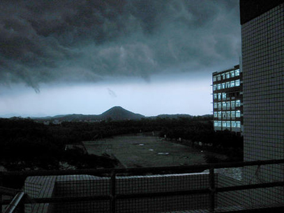

#import "Leask.h"
需要释放
4/10/2006 7:40:17 PM

好朋友的 Space 上的一张图片，没有问那里来的。
不需要知道吧...
感觉不错，没想到我们学校在乌云面前可以如此悲壮。
正如心情压抑的自己，
需要释放，
需要空间，
需要休息...
Comments
eyeslikeyours belinda - 4/11/2006 7:29:05 PM
apple机的主人,我把他们看作是我的同行,
因为估计是一个行业圈子的.
我很喜欢你这里的气氛.
俏 徐 - 4/13/2006 8:28:15 PM
感觉像哈利波特的城堡！
eyeslikeyours belinda - 4/11/2006 7:29:05 PM